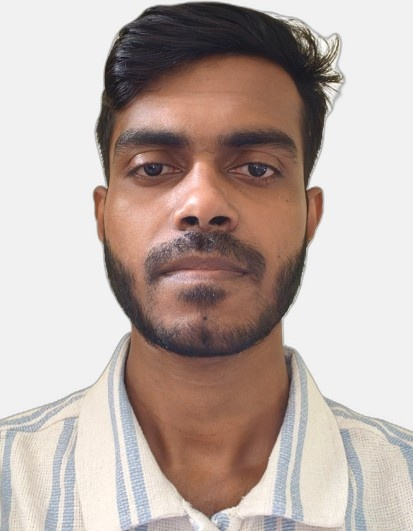

Tanmoy Das

Summary
Motivated and quick learner with a passion for embracing new technologies. Possessing an analytical mindset and a quick learner’s attitude. Eager to contribute to innovative practices and develop proficiency in system/technology areas, leveraging academic knowledge and a willingness to embrace new technologies.
Education
L.D. College of Engineering, Ahmedabad
BE in Electronics and Communications Engineering, 2020-24
Work Experience
Trainee Engineer - PCB PLANET INDIA PVT. LTD.
June 2024 - June 2025
- Front-end services for PCB manufacturing
- Ensuring manufacturability and compliance with industry standards
- Providing high-quality PCB data analysis and fabrication solutions
Intern - Einfochips pvt.Ltd.
July 2023- August 2023
- Explored quantum computing(QCA) with cirq tool.
- Gained insights about 3D robotic industry and drone types
- Observed an air quality monitoring website(live pollution data for India)
Skills
- Programming Languages: Python, C++
- Computer Networking Fundamentals
- Web Development: HTML,CSS, JavaScript, PHP
- Operating System Concepts
- Basics of MySQL
- OOps Concepts
- Problem-solving and Analytical Thinking
Certifications
Introduction to Packet Tracer - Cisco Networking Academy
Introduction to the Internet of Things - Cisco Networking Academy
Other